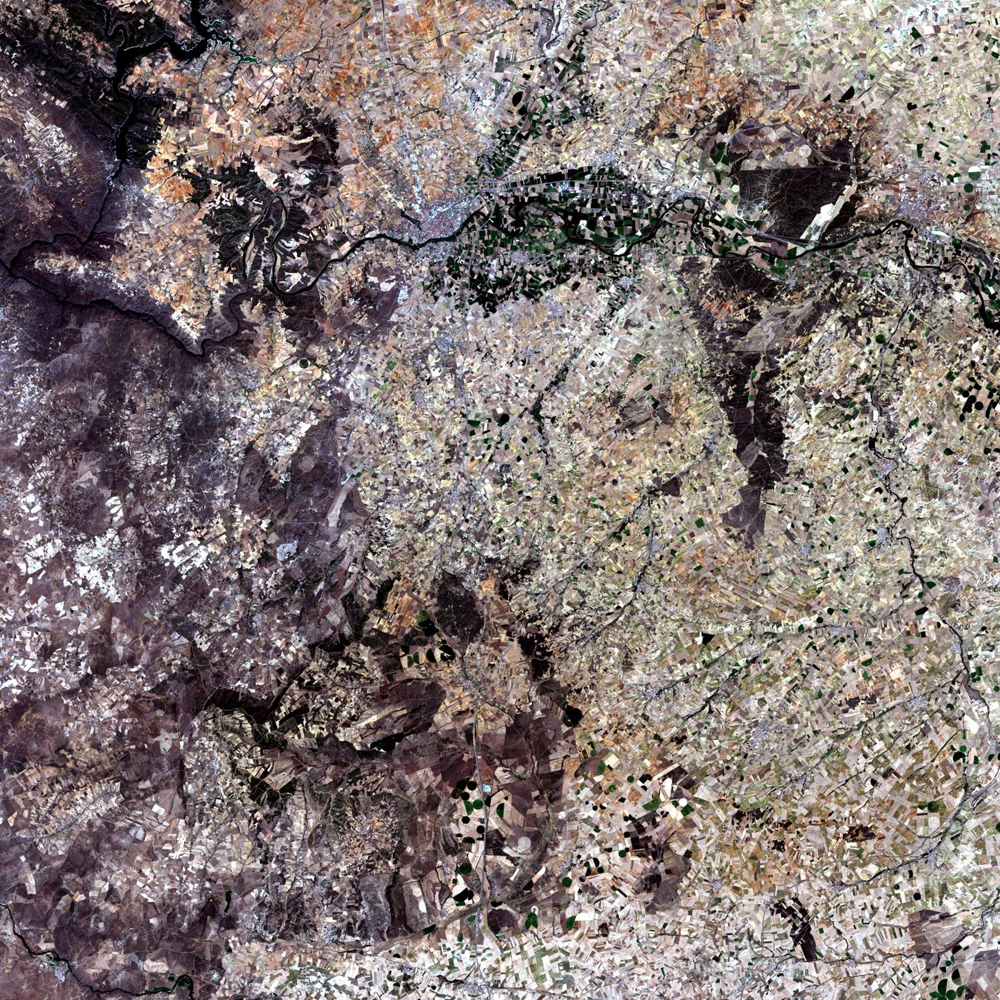
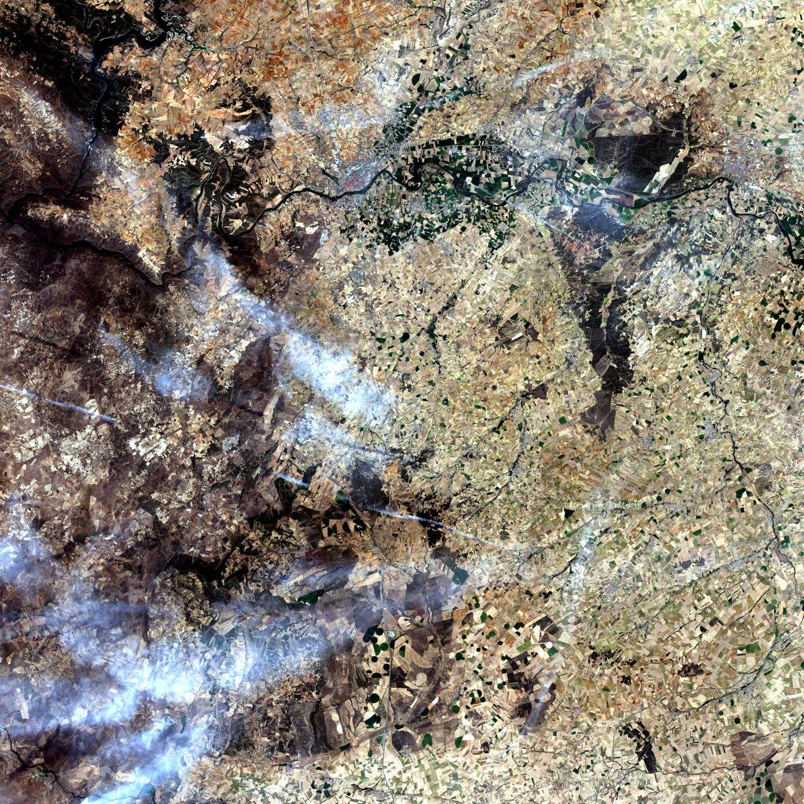
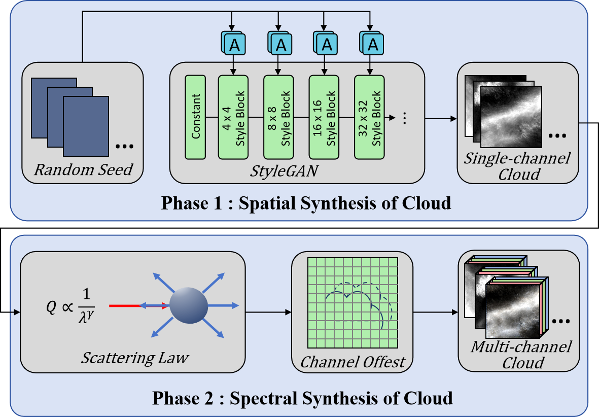
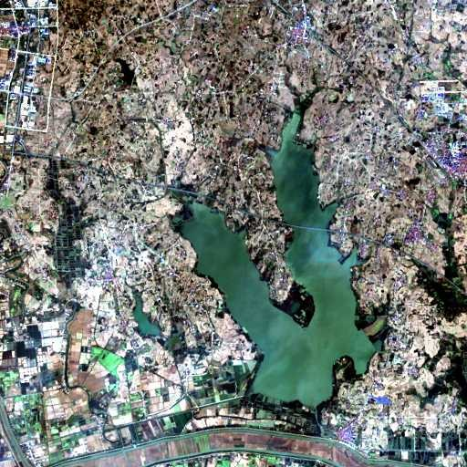
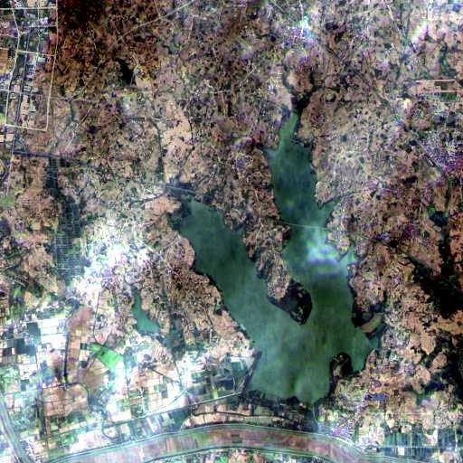
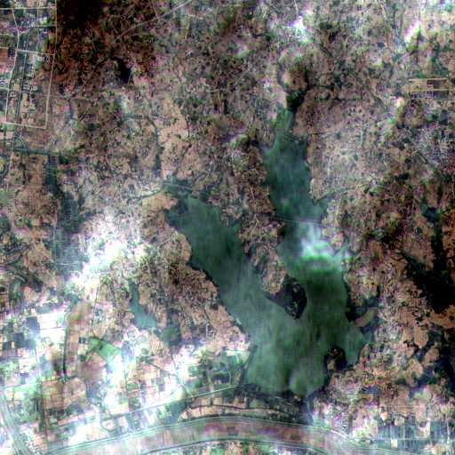
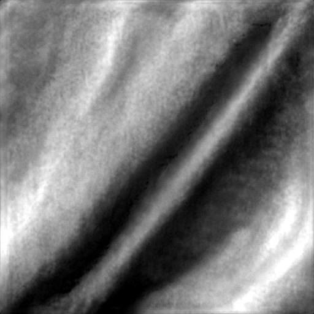
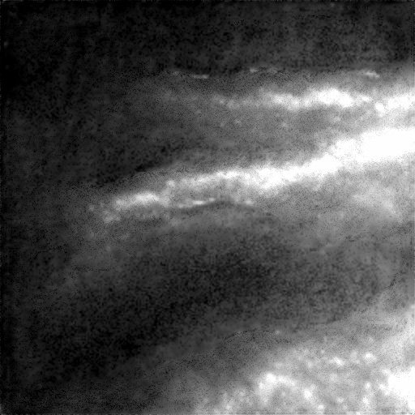
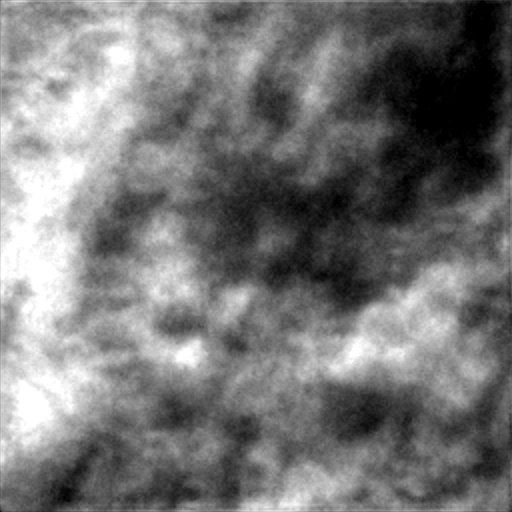
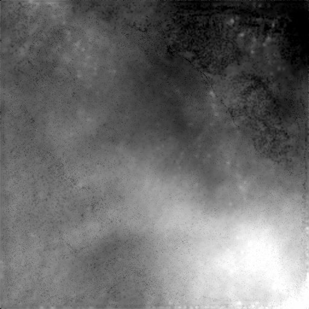

Spatial synthesis
A StyleGAN-based generator learns cirrus-band cloud morphology and produces varied single-channel cloud fields from random seeds.
IEEE Transactions on Geoscience and Remote Sensing · 2025
Physical law embedded generative cloud synthesis for realistic, diverse multispectral remote sensing imagery.
PGCS learns the spatial structure of clouds, then uses atmospheric scattering relationships to synthesize their spectral response. The resulting clouds can be combined with clear observations to form aligned cloudy and cloud-free pairs.


Paired author-provided Landsat 8/9 example · sample 01. Drag the divider to compare identical ground content.
THE METHOD
Two complementary phases separate cloud appearance from its wavelength-dependent radiance. A final composition step turns synthesis into paired training data.
A StyleGAN-based generator learns cirrus-band cloud morphology and produces varied single-channel cloud fields from random seeds.
Local statistics and global fitting connect cloud radiance to a scattering parameter, transferring the generated cloud across spectral bands. Sensor-specific channel offsets are then applied.
Synthesized multispectral cloud radiance is added to clear surface observations, yielding matched clear, cloud, and cloudy images.

VISUAL EVIDENCE
The author-provided sequence below keeps the ground scene fixed while cloud thickness increases. These are saved model outputs, so switching states is instant and does not call a GPU.



03 / MORPHOLOGY
Selected generated single-channel cloud patterns from the paper’s cloud-species analysis.




EVALUATION
The study evaluates spatial cloud patterns, the spectral synthesis model, comparisons with three cloud synthesis approaches, and the value of PGCS data for thin-cloud correction.
Methods and complete results in the paperDOWNSTREAM APPLICATION
PGCS is a cloud synthesis method. The paper also investigates two correction approaches built from it: PGCS_M, a model-driven method using the cirrus band, and PGCS_D, a data-driven method trained with synthetic pairs.
These correction results demonstrate a use of PGCS-generated data; they are not the output of the online synthesis demo.
ACCESS THE WORK
Start with the publication or the released research scripts. The integrated desktop module supports single-scene masking, paired dataset construction, and designated simulation; its packaged executable and private model weights are not hosted on this site.
The current gallery uses real, pre-generated outputs. A Gradio demo will appear here only after the CUDA pipeline is verified on a compatible ZeroGPU environment. The planned demo accepts a preset scene or a small clear TOA GeoTIFF patch.
CITATION
If PGCS is useful in your research, please cite the published article.
@article{xu2025pgcs,
title={PGCS: Physical Law Embedded Generative Cloud Synthesis in Remote Sensing Images},
author={Xu, Liying and Li, Huifang and Shen, Huanfeng and Lei, Mingyang and Jiang, Tao},
journal={IEEE Transactions on Geoscience and Remote Sensing},
volume={63},
year={2025},
doi={10.1109/TGRS.2025.3553239}
}